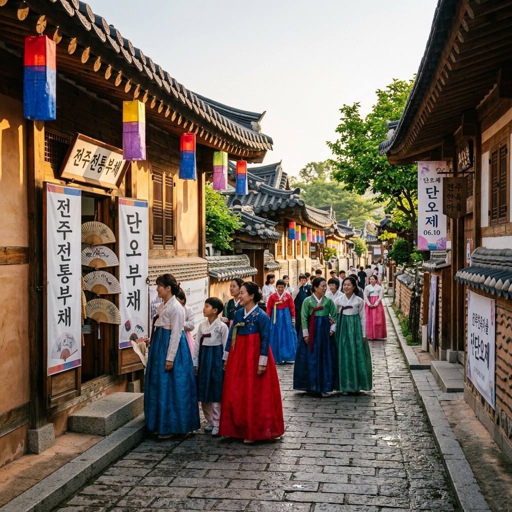
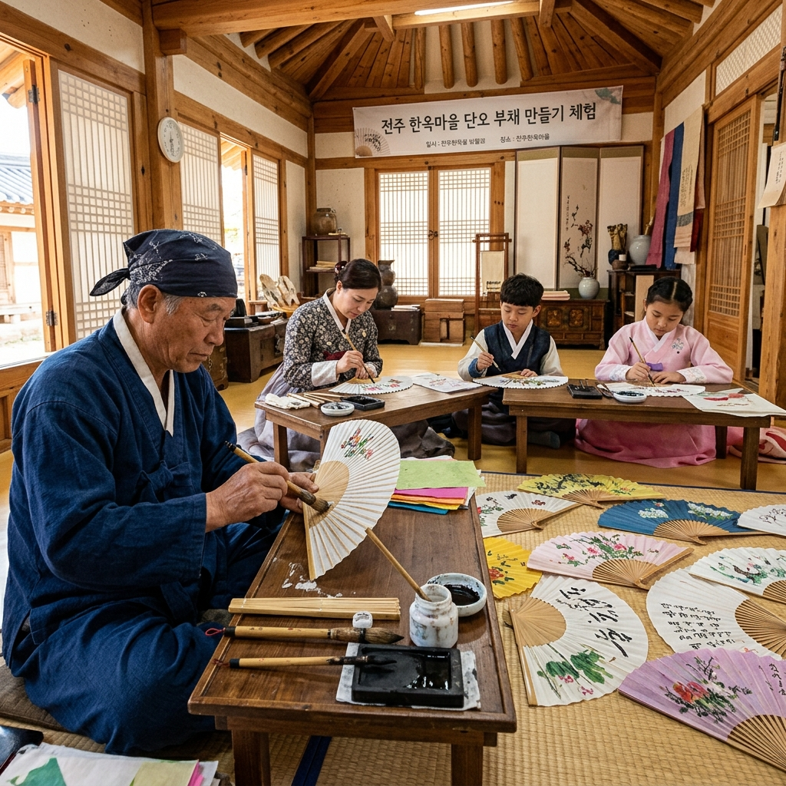
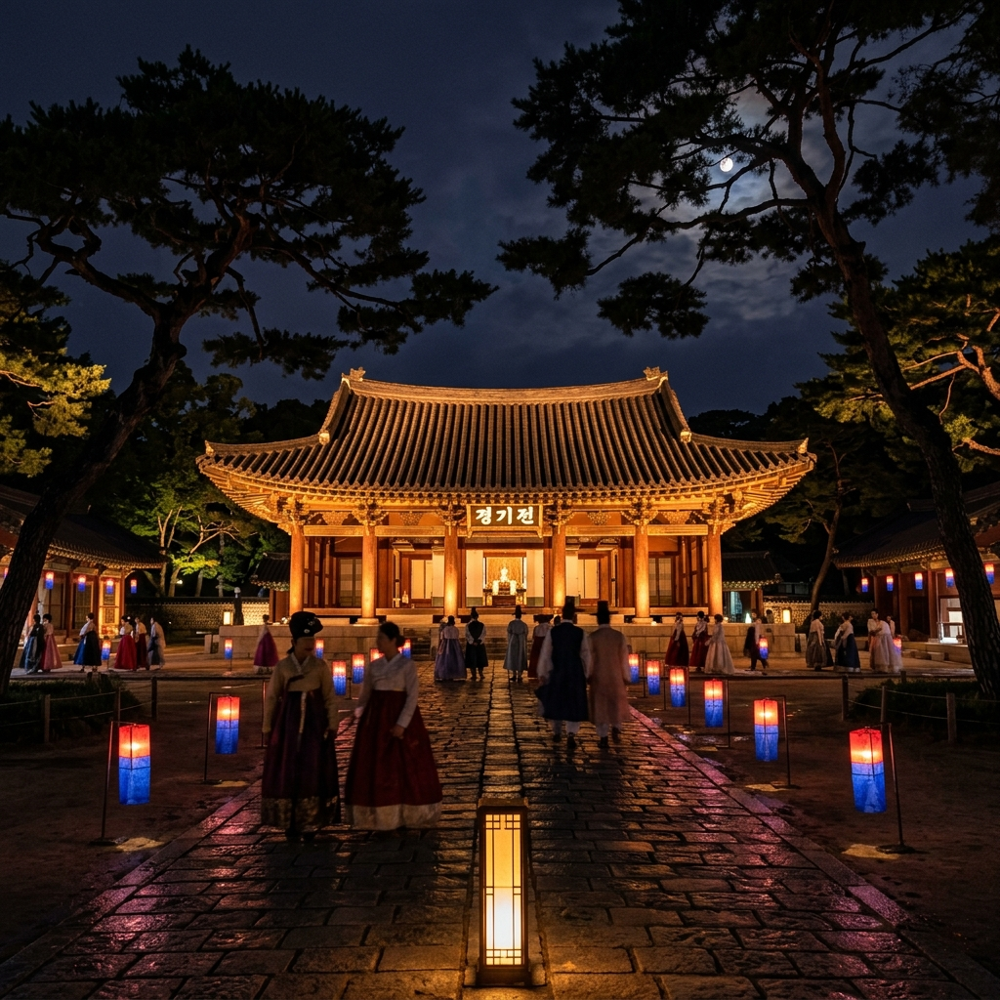

왜 하필 전주냐는 질문을 종종 받습니다.
대답은 의외로 단순한데, 단오의 핵심 풍습 하나가 전주 땅과 깊게 얽혀 있기 때문입니다.
무더위가 본격적으로 밀려오는 단오 무렵에는 임금이 신하에게, 부모가 자식에게, 벗끼리 서로 부채를 건네는 풍습이 있었습니다.
그런데 예부터 가장 좋은 부채가 나던 곳이 바로 전라도였고, 전주·나주 일대에서 만든 합죽선(合竹扇)은 조선에서 손꼽히는 최고 품질로 통했습니다.
단오 부채를 다른 곳도 아닌 전주 한옥마을에서 만들어 본다는 사실 자체에 특별한 의미가 실리는 셈이지요.
물론 단오의 풍속이 부채만은 아닙니다.
음력 5월 5일 단오는 '수릿날'로도 불리며, 양의 기운을 뜻하는 숫자 5가 두 번 겹쳐 일 년 중 양기가 가장 세다고 여겨졌습니다.
춘분과 하지 사이에 자리해 본격적인 농사철의 출발을 알리는 한편, 다가올 여름 더위와 돌림병을 막으려는 주술적 의례가 함께 행해지던 날이기도 했습니다.
설날·추석과 더불어 우리 민족 3대 명절로 꼽혔고, 조선 시대까지만 해도 한 해를 통틀어 가장 큰 축제였습니다.
씨름판이 벌어지고 그네가 하늘로 솟구치고 창포물에 머리를 감고 수리취떡을 나눠 먹던 그 6월의 풍경이, 전주 한옥마을 골목에는 지금도 옅게 남아 있습니다.
한옥마을을 처음 걸을 때 가장 인상 깊었던 건, 이곳이 박제된 관광지가 아니라는 점이었습니다.
실제로 수백 명의 주민이 지금도 살림을 꾸리며 생활하는 동네이면서, 동시에 해마다 수백만 명이 찾아오는 우리나라에서 가장 큰 한옥 밀집 지역입니다.
전주시 완산구 교동과 풍남동 일대에 700채가 넘는 한옥이 빼곡히 들어서 있고, 골목을 돌 때마다 카페와 공방, 전통 숙소, 전통 음식점이 번갈아 모습을 드러냅니다.
다만 발로 다 훑기에는 면적이 제법 넓다는 점은 알고 가는 편이 좋습니다.
핵심 골목만 빠르게 도는 데는 1~2시간이면 충분하지만, 경기전과 전동성당, 풍남문, 전주향교까지 묶어서 보려면 반나절은 잡아야 합니다.
그래서 저는 미리 어느 구역을 볼지 정해 놓고 움직이는 편인데, 이게 시간을 아끼는 가장 확실한 방법이었습니다.
꼭 봐야 할 곳을 하나만 고르라면 단연 경기전(慶基殿)입니다.
조선을 연 태조 이성계의 어진(御眞·초상화)을 모신 전각으로, 전주가 이씨 조선의 본향임을 보여 주는 상징적인 공간입니다.
오래된 소나무 숲과 전각이 어우러진 경기전 경내는 단오 무렵 유난히 분위기가 곱습니다.
바로 옆에는 서양 로마네스크 양식의 전동성당이 붙어 있어, 한옥과 서양 건축이 묘하게 섞이는 전주만의 풍경이 만들어집니다.

전주는 서울에서 KTX로 1시간 40분이면 닿는 교통 요지라, 당일치기로도 부담이 적습니다.
KTX로 갈 경우 서울 용산역이나 서울역에서 전라선 KTX에 오르면 전주역까지 약 1시간 40분이 걸립니다.
전주역에서 한옥마을까지는 시내버스나 택시로 갈아타는데, 79번·77번 같은 버스를 타면 15~20분 안에 마을 입구에 내릴 수 있습니다.
단오 당일은 사람이 몰리는 만큼, 가능하면 오전 이른 시간대(8~10시)에 출발하는 KTX를 미리 잡아 두기를 권합니다.
고속버스를 탈 경우 서울 강남고속버스터미널에서 전주행 차편이 자주 다닙니다.
걸리는 시간은 대략 2시간 30분~3시간이고, 전주고속버스터미널에서 한옥마을까지는 버스로 10분 안팎입니다.
KTX보다 요금이 낮아 예산을 줄이고 싶은 분이라면 괜찮은 선택지입니다.
차를 가져갈 경우 한옥마을 주변 공영주차장을 쓸 수 있습니다.
마을 입구 남쪽의 큰 공영주차장이 규모가 가장 크지만, 단오 당일과 인근 주말에는 오전 10시만 넘어가도 만차가 되는 일이 잦습니다.
일찍 도착하거나 아예 대중교통으로 움직이는 편이 마음이 편합니다.
한옥마을에 왔다면 거의 빠지지 않는 코스가 한복을 빌려 입고 골목을 걷는 것입니다.
마을 입구 일대에 한복 대여점이 수십 곳 늘어서 있습니다.
기본 요금은 1~2시간 기준 1만 원에서 2만 원 사이이며, 반일(4~6시간)이나 종일 대여도 가능합니다.
단오 당일이라면 색동 저고리나 모시 한복을 고르면 그날의 계절감이 한층 살아납니다.
사진이 잘 나오는 자리는 대체로 정해져 있는데, 우선 경기전 정문 앞은 웅장한 홍살문과 한복이 어우러지는 가장 고전적인 포인트입니다.
전동성당 앞에서는 유럽 고딕 양식 건물과 한복이 이색적으로 대비되는 컷을 담을 수 있습니다.
교동 골목의 좁은 돌담길은 한복 입고 걷는 자연스러운 뒷모습이 잘 나오기로 알려져 있습니다.
단오 기간에는 대여점이 특히 붐비니, 대부분 오전 9시~10시인 개점 시간에 맞춰 일찍 가서 원하는 색과 사이즈를 먼저 잡는 게 좋습니다.
드레스 룸과 머리 핀업 서비스를 함께 해 주는 곳도 많으므로, 예약할 때 포함 서비스 범위를 미리 확인해 두세요.
전주에서 단오를 가장 단오답게 보내는 방법을 하나만 꼽는다면 저는 합죽선(合竹扇) 만들기 체험을 듭니다.
전주 합죽선은 대나무를 가늘게 쪼개 뼈대를 세우고 그 위에 한지(韓紙)를 입혀 완성하는 전통 부채입니다.
조선 시대에는 임금에게 진상될 만큼 최고급으로 대접받았고, 지금은 전라북도 무형문화재로 지정된 장인들이 그 맥을 이어 오고 있습니다.
마을 안 전통 공예 체험관들은 단오 기간을 전후해 합죽선 프로그램을 운영합니다.
진행 방식은 업체마다 조금씩 다르지만, 보통은 뼈대가 미리 잡힌 부채에 한지를 붙이고 그 위에 직접 그림을 그리거나 글씨를 써서 마무리하는 형태입니다.
1~2시간이면 세상에 하나뿐인 기념품이 손에 들어와, 아이부터 어른까지 만족도가 꽤 높은 체험입니다.
다만 대나무 뼈대를 직접 잇는 과정까지 포함하는 전통 방식의 합죽선 제작은 결이 다릅니다.
숙련된 장인 곁에서 반나절 넘게 매달려야 하는 심화 과정이라, 가벼운 관광객보다는 전통 공예에 깊은 관심이 있는 분께 권합니다.
운영 중인 체험 목록과 예약 가능 여부는 한옥마을 관광안내소(063-284-1126)에 미리 문의해 두는 편이 안전합니다.
비용은 업체와 프로그램에 따라 갈리는데, 일반 한지 그림 부채 체험은 1인 1만 원 안팎, 심화 과정은 보통 3만 원 이상으로 잡으면 됩니다.

부채를 만들었다면 단오의 또 다른 상징, 창포물 체험도 꼭 챙기시길 바랍니다.
창포(石菖蒲)는 물가에서 자라는 향이 짙은 식물로, 뿌리와 잎에서 독특한 내음이 납니다.
조선 시대에는 단오 아침 창포를 삶아 그 물로 머리를 감으면 머릿결이 좋아지고 잡귀를 물리친다는 민간 믿음이 있었습니다.
전주 한옥마을에서도 단오 기간을 전후해 전통 창포물 족욕이나 세발(洗髮) 체험을 운영하는 곳들을 만날 수 있습니다.
이 무렵 절기 음식으로는 수리취떡이 대표 격입니다.
수리취라는 쑥과 비슷한 산나물로 색을 입힌 떡인데, 수레바퀴 문양을 찍어 빚는다는 데서 이름이 왔습니다.
마을 안 전통 떡집들이 단오 무렵에만 한정으로 수리취떡을 내놓으니, 지나치지 말고 한 입 맛보시길 권합니다.
단오 절식(節食)으로는 쑥단자와 앵두화채, 여름철 건강 음료인 제호탕도 있습니다.
전통 찻집이 많은 한옥마을에서는 여름을 앞두고 제호탕이나 오미자화채 같은 전통 청량 음료를 즐길 기회가 곳곳에 있습니다.
한식 전문 카페에서 2만 원 안팎이면 전통 다과 세트를 주문해 단오의 맛을 충분히 느낄 수 있습니다.
단오 무렵 한옥마을은 낮보다 밤이 더 근사할 때가 많습니다.
경기전은 야간 특별 관람을 평소에도 운영하고, 단오 즈음에는 그에 맞춘 특별 행사가 더해지기도 합니다.
밤에는 낮과는 완전히 다른 분위기가 펼쳐집니다.
경내 소나무와 전각들이 은은한 조명에 물들면서 신비로운 고궁의 밤 정취를 자아냅니다.
야간 관람 시간과 입장 방법은 경기전 공식 안내(063-281-2891)나 전주시 관광 사이트에서 미리 확인해 두어야 합니다.
경기전 야간 관람을 마친 뒤 곧장 옆 전동성당으로 넘어가면 하루치 야경 코스가 완성됩니다.
전동성당은 일제강점기인 1914년에 지어진 호남 최초의 로마네스크 양식 천주교 성당으로, 야간 조명 아래 붉은 벽돌과 아치 창문이 환상적인 분위기를 냅니다.
성당 정문 앞에서 한복을 입고 담은 야경 사진은 전주 여행의 대표 기념 컷으로 SNS에서 수없이 공유됩니다.
여기에 풍남문(豐南門) 야경까지 더하면 더할 나위 없습니다.
전주부성의 남쪽 성문으로 보물 제308호로 지정된 이 문은 야간 조명이 들어오면 중후하고 웅장한 기품을 드러냅니다.
한옥마을에서 도보 10분 이내라 동선상 부담도 거의 없습니다.
전주는 먹는 즐거움 하나만으로도 갈 이유가 충분한 도시입니다.
전주비빔밥은 전국 어디서나 먹을 수 있지만, 전주에서 먹는 전주비빔밥은 결이 다릅니다.
탕기에 구수한 사골 육수를 깔고 30여 가지 나물과 전주 황포묵, 제육볶음을 올린 뒤 참기름과 고추장을 더해 비벼 먹습니다.
한옥마을 안 이름난 비빔밥집은 점심때 줄이 생기기도 하니, 개점 직전이나 직후를 노려 가는 편이 유리합니다.
아침이라면 전주 콩나물국밥을 빼놓을 수 없습니다.
하룻밤 정성껏 우린 사골 육수에 콩나물을 넣고 끓인 국밥으로, 전주 사람들이 아침 해장으로 즐기는 대표 메뉴입니다.
1만 원 안팎이면 든든하게 한 끼가 해결되고, 전주역 근처나 남부시장 주변 콩나물국밥 골목으로 가면 오래된 맛집들을 만날 수 있습니다.
시간 여유가 있다면 한정식 한 상도 욕심내 볼 만합니다.
전주 한정식은 수십 가지 반찬이 상을 가득 채우는 정통 방식으로, 1인 3만 원~5만 원 선이면 제대로 된 코스를 즐길 수 있습니다.
한옥마을 안에도 고풍스러운 한옥에서 한정식을 내는 식당들이 있어, 음식과 분위기를 함께 챙길 수 있습니다.

단오 방문을 한층 알차게 만들어 줄 실전 정보를 묶어 정리해 봅니다.
주차는 단오 당일과 전후 주말이 가장 큰 고민거리입니다.
이 시기에는 한옥마을 인근 주차 공간이 사실상 포화 상태가 됩니다.
가장 현실적인 해법은 전주역이나 전주버스터미널에 차를 세워 두고 시내버스로 들어가거나, 계절에 따라 다르게 운영되는 전주시 셔틀버스를 이용하는 것입니다.
드라이브 여행을 계획 중이라면 단오 당일보다 하루 먼저 도착해 숙소에 차를 대 두는 편이 스트레스가 가장 적습니다.
숙박은 전통 한옥 게스트하우스부터 현대식 한옥 스테이까지 선택지가 다양합니다.
다만 단오 기간은 성수기라, 최소 2~3주 전에는 예약을 끝내 두는 편이 안전합니다.
관광 동선만 보면 경기전과 가까운 교동·풍남동 구역 숙소가 가장 편리합니다.
체험 예약의 경우 인기 있는 합죽선 체험이나 전통 음식 체험은 단오 전에 온라인이나 전화로 미리 잡아 두는 게 좋습니다.
현장 접수도 되긴 하지만 자리가 일찍 마감될 수 있습니다.
운영 중인 프로그램 목록은 전주한옥마을 공식 홈페이지(hanok.jeonju.go.kr)에서 확인하면 됩니다.
| 준비 항목 | 핵심 정리 |
|---|---|
| 단오 날짜 | 양력 6월 5일(금) — 음력 5월 5일 |
| 한복 대여 | 마을 내 수십 곳, 1~2시간 1만 원~2만 원 (오전 일찍 선점 권장) |
| 경기전 입장료 | 성인 3,000원 / 청소년 2,000원 / 어린이 1,000원 (야간 행사 별도 확인) |
| 가는 길 | KTX 전주역 → 버스·택시 15~20분 / 고속버스 전주터미널 → 버스 10분 |
| 주차 | 공영주차장 유료·혼잡, 대중교통 또는 전날 도착 권장 |
| 체험·숙박 예약 | 합죽선 체험 사전 예약, 숙소는 2~3주 전 마감 안전 |